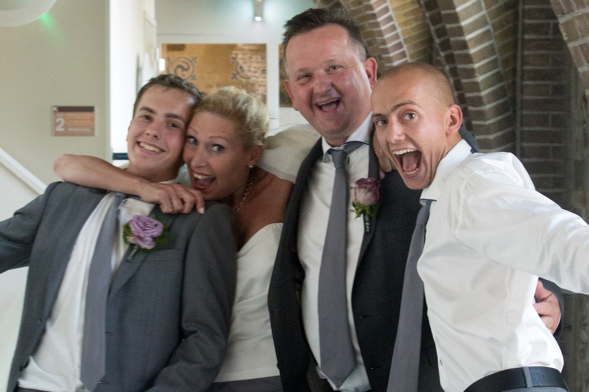

Mijn naam is Hugo Tinke, ik ben 21 jaar oud en woon in het dorpje sprundel samen met mijn vader, stiefmoeder en mijn broer.
Momententeel studeer ik voor ICT Aplicatie Ontwikkelaar op Davinci College in Dordrecht en mijn vrije tijd ben ik scoutingleider en proffesioneel aankloter op de PC.
Ik heb ook werk! en dat is Ton Laros, een entertainment bedrijf waar ik al werk sinds ik student ben.
